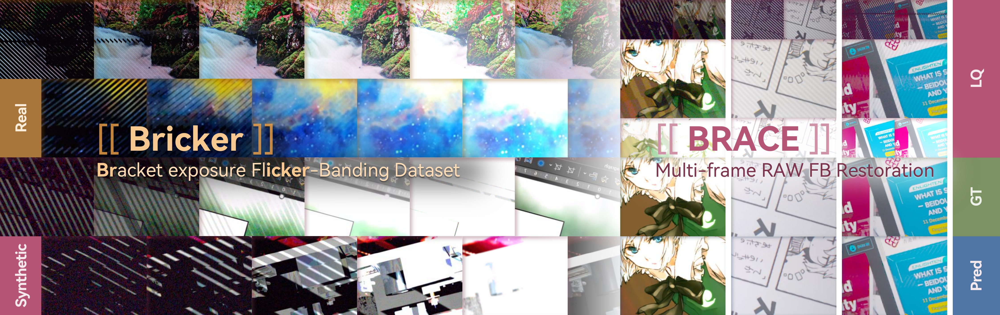
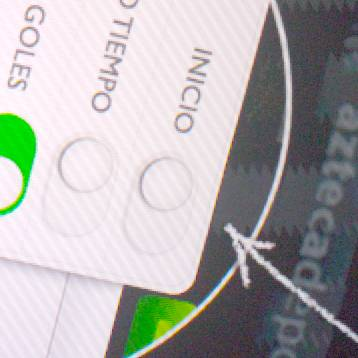
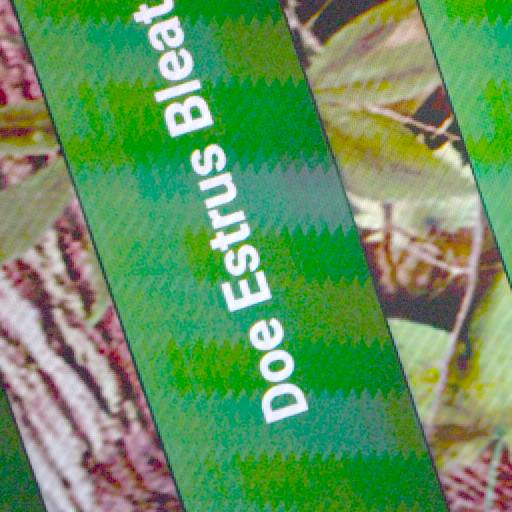
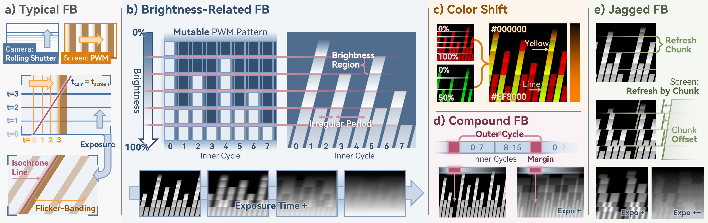
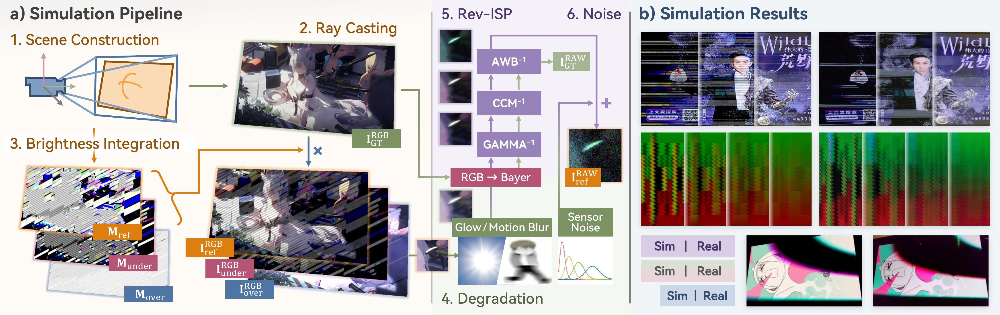
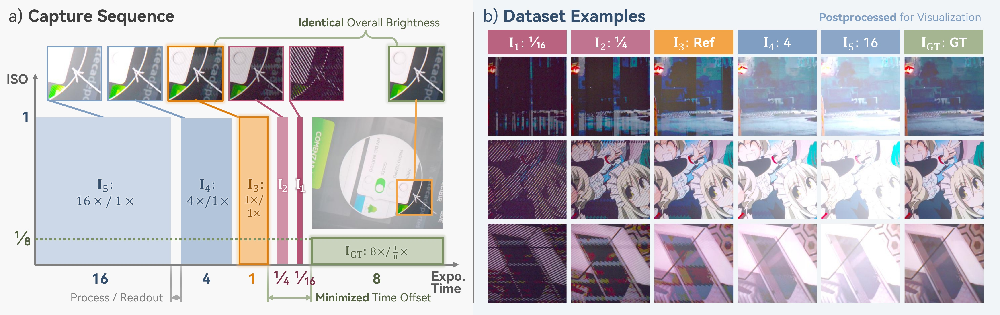
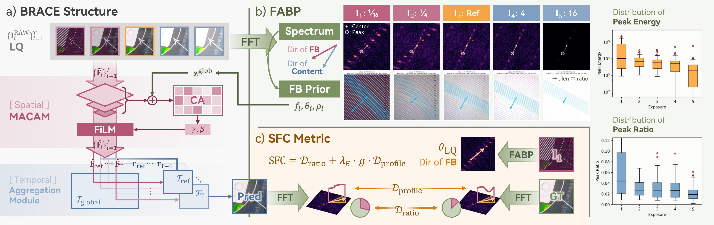
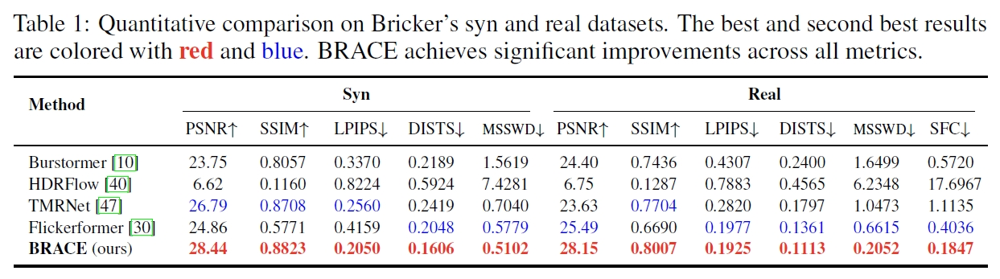
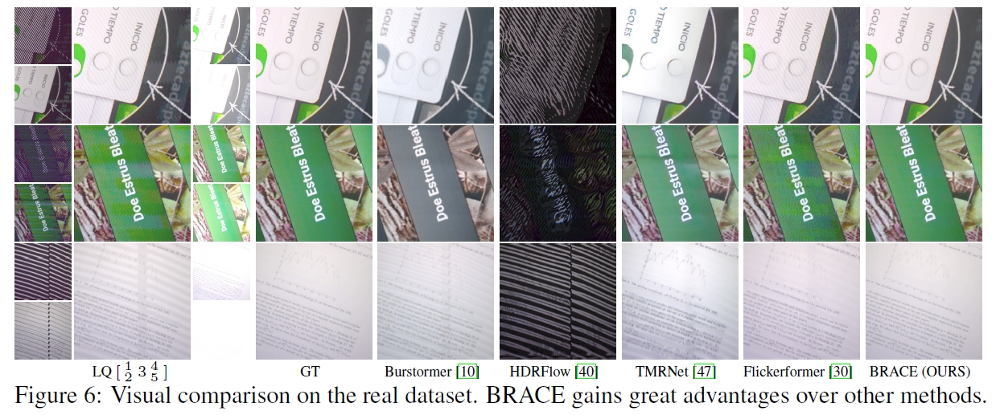

Flicker-Banding Removal Results


Abstract
Flicker-banding (FB), arises from temporal aliasing between a camera's rolling shutter and a display's brightness modulation, degrading screen-captured image readability with color shifts and jagged patterns. Existing single-frame methods with simplified parametric stripe models cannot reliably distinguish these artifacts from genuine texture. To address this, we conduct a systematic analysis of complex FB morphologies and reveal their significant variation across exposure settings, motivating a multi-frame bracketed RAW restoration paradigm. We construct Bricker, a synthetic–real bracketed RAW dataset built via ray-tracing-based physical simulation and automated multi-exposure capture tool. We further propose BRACE: Bracketed RAW Flicker-banding Removal, a multi-frame restoration model that utilizes frequency-aware banding prior and a multi-scale spatial cross-attention modulator (MSCAM) for cross-exposure spatial fusion. We also introduce the Stripe Frequency Consistency (SFC) metric to evaluate banding removal. Experiments demonstrate state-of-the-art performance on both synthetic and real benchmarks. Our dataset and code are available at: https://github.com/ZZH-qwq/BRACE.
Methods

Complex FB morphologies commonly observed in real captures.

Overview of the proposed synthetic data generation pipeline.

Overview of the real data collection process.

Overview of the proposed BRACE model architecture.
Results
Quantitative Comparisons on Bricker's Synthetic and Real Benchmark (click to expand)

Visual Comparisons on Bricker's Real Benchmark (click to expand)

Bricker Dataset
We construct Bricker, a paired synthetic and real multi-frame RAW dataset covering diverse display types, driving strategies, and capture conditions. The synthetic dataset contains 1,000 training and 100 test samples, while the real dataset contains 250 training and 40 test samples. Each sample includes a 5-frame bracketed RAW sequence and a corresponding ground-truth frame.
Synthetic Dataset
- Ray-tracing-based physics-driven simulation
- 1,000 training / 100 test samples
- 5-frame bracketed RAW sequences
- Diverse display types and driving strategies
Real-world Dataset
- Automated multi-exposure capture tool
- 250 training / 40 test scenes
- Pixel-aligned ground truth via long exposure
- Diverse displays, cameras, and conditions
BibTeX
@article{zhou2026brace,
title={{Bricker to BRACE}: A Bracket Exposure RAW Dataset and Restoration Model for Flicker-Banding},
author={Zihan, Zhou and Libo, Zhu and Jue, Gong and Zhiyi, Zhou and Jiezhang, Cao and Yong, Guo and Yulun, Zhang},
journal={arXiv preprint arXiv:2606.29845},
year={2026}
}